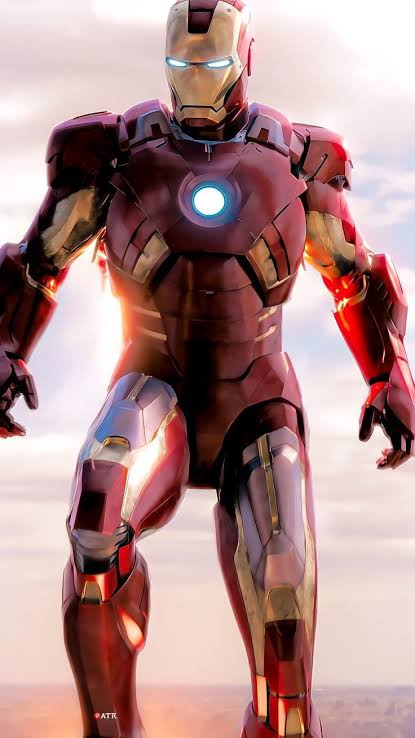
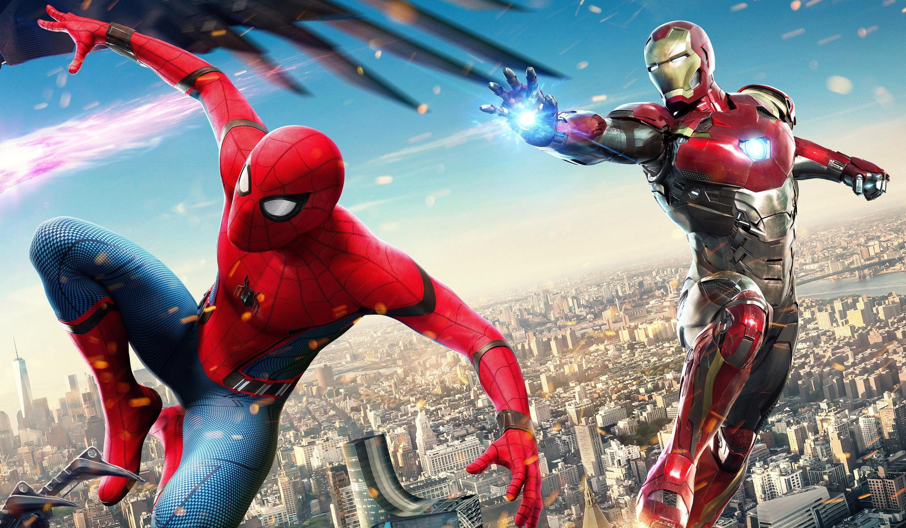
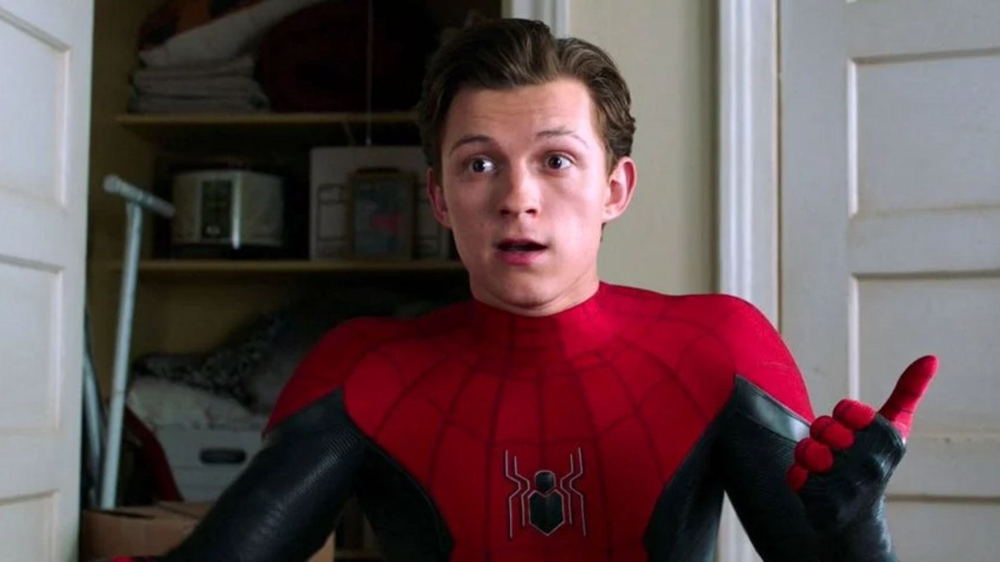
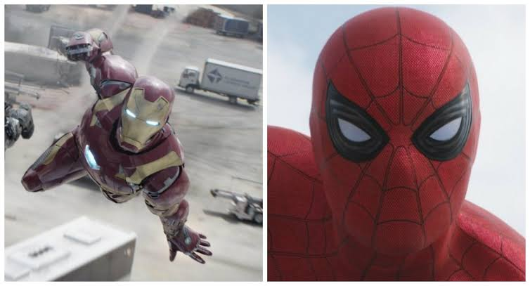
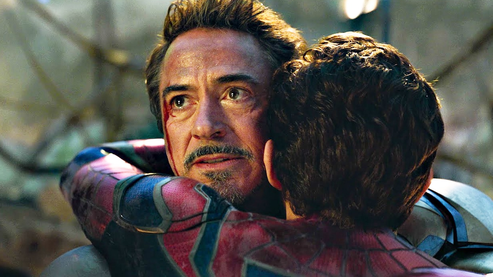

Homem de Ferro
Tony Stark constrói uma armadura para escapar do cativeiro e se torna um herói.
Este site reúne dois dos maiores heróis da Marvel: o Homem de Ferro e o Homem-Aranha. De um lado, um bilionário genial que construiu sua própria armadura. Do outro, um adolescente de Nova York com superforça e agilidade. Juntos, eles formam uma das amizades mais marcantes dos filmes.

Tony Stark conheceu Peter Parker em 2016
e passou a orientar o garoto como
mentor e figura paterna.

Tony Stark constrói uma armadura para escapar do cativeiro e se torna um herói.

Peter Parker é um adolescente de Queens com superforça, agilidade e sentido aranha.

Tony recruta Peter para a batalha entre os heróis. É o primeiro encontro dos dois.

Tony dá a Peter um traje tecnológico e passa a orientá-lo como mentor.

Os dois heróis cruzam juntos o céu de Nova York, o mentor ao lado do aprendiz.

Peter reencontra Tony na batalha final. Tony se sacrifica para derrotar Thanos.
"Eu sou o Homem de Ferro."
Tony Stark
"Com grandes poderes vêm grandes responsabilidades."
Peter Parker